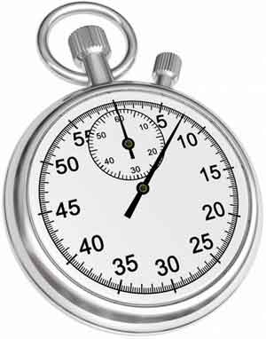
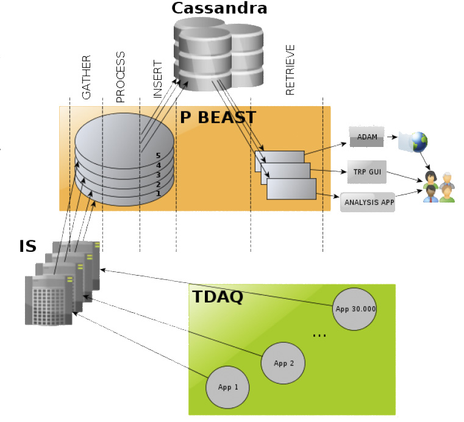
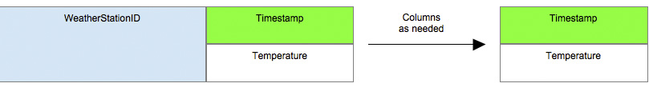
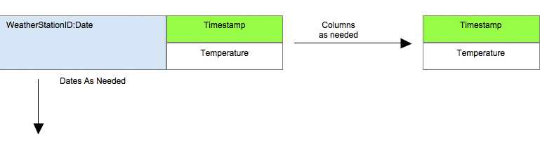
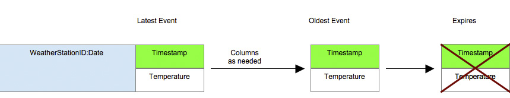
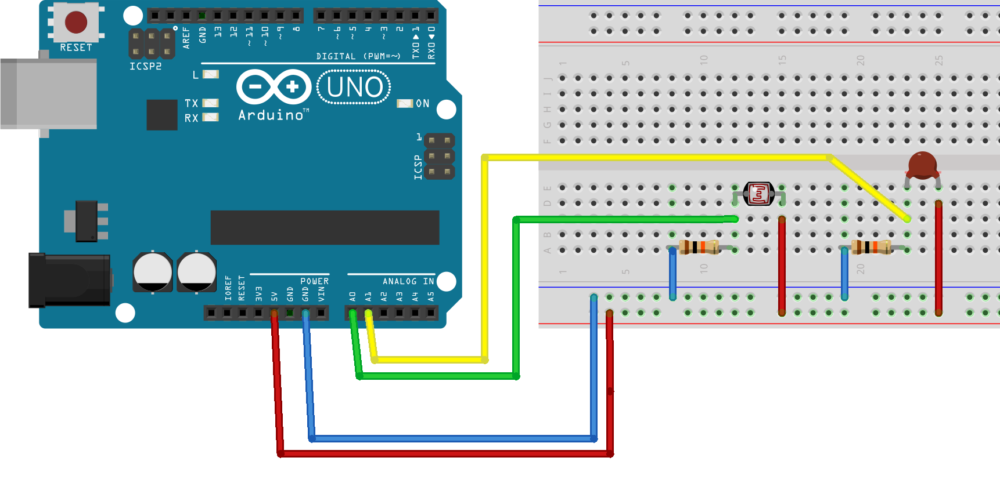

C* Time Series

with and
Marko Švaljek
 msvaljek@gmail.com
msvaljek@gmail.com
 @msvaljek
@msvaljek
msvaljek.blogspot.com
@PlanetCassandra
@CassandraEurope
#cassandra #meetup #CQL
Agenda
- Working with Time Series in C*
- Cassandra with node.js
- DIY: Arduino sensor
Time Series
A time series is a sequence of data points, measured typically at successive points in time spaced at uniform time intervals.
Usage
- performance metrics
- fleet tracking
- sensor data
- logs, user activity
- financial data ...
C* @ CERN
Single device, single row

Definition
CREATE TABLE temperature (
weatherstation_id text,
event_time timestamp,
temperature float,
PRIMARY KEY
(weatherstation_id, event_time)
);
Inserting
INSERT INTO temperature(weatherstation_id,
event_time, temperature)
VALUES ('A', '2014-06-12 18:45:00', 26.53);
INSERT INTO temperature(weatherstation_id,
event_time, temperature)
VALUES ('A', '2014-06-12 18:46:00', 26.68);
All measurements of a single station
SELECT event_time, temperature
FROM temperature
WHERE weatherstation_id = 'A';
Getting from - to data
SELECT temperature
FROM temperature
WHERE weatherstation_id = 'A'
AND event_time > '2014-06-12 18:40:00'
AND event_time < '2014-06-12 18:50:00';
Row partitioning

Definition, partitioning
CREATE TABLE temperature_by_day (
weatherstation_id text,
date text,
event_time timestamp,
temperature float,
PRIMARY KEY
((weatherstation_id, date),
event_time)
);
Getting all data for a single day
SELECT *
FROM temperature_by_day
WHERE weatherstation_id = 'A'
AND date = '2014-06-12';
Reverse order timeseries

Definition, reversed timeseries
CREATE TABLE latest_temperatures (
weatherstation_id text,
event_time timestamp,
temperature float,
PRIMARY KEY
(weatherstation_id, event_time),
) WITH CLUSTERING ORDER BY
(event_time DESC);
Insert, TTL
INSERT INTO latest_temperatures
(weatherstation_id, event_time,
temperature)
VALUES
('A', '2014-06-12 18:55:00', 30.00)
USING TTL 20;
Select, LIMIT
SELECT * FROM latest_temperatures
WHERE weatherstation_id = 'A'
LIMIT 5;
Timeuuid
- time, mac, sequence
- time ordered id
- billion/s in 100y = 50%
wikipedia.org/wiki/Universally_unique_identifier
#Random_UUID_probability_of_duplicates
Timeuuid CQL functions
- dateOf()
- now()
- minTimeuuid()
- maxTimeuuid()
- unixTimestampOf()
Example
CREATE TABLE stocks_ticks (
symbol text,
date int,
trade timeuuid,
trade_details text,
PRIMARY KEY ((symbol, date), trade)
) WITH CLUSTERING ORDER BY (trade DESC);
Insert, select
INSERT INTO stocks_ticks
(symbol, date, trade, trade_details)
VALUES ('KTCG', 163, now(),
'BUY:2000');
SELECT * FROM stocks_ticks
WHERE symbol = 'KTCG'
AND date = 163
AND trade >
maxTimeuuid('2014-06-12 18:00')
AND trade <
minTimeUUID('2014-06-12 18:01');
Node.js is a platform built on Chrome's JavaScript runtime for easily building applications that uses an event-driven, non-blocking I/O model.
Traditionally
Each connection (request) spawns a new thread, taking up system RAM and eventually maxing-out at the amount of RAM available
Processing

Node.js

npm
Started as a seperate project but grown be the default package manager. Each Node App / Module contains a package.json (npm init)
Cassandra and Node.js
npm init
npm install node-cassandra-cql
Getting started
var cql = require('node-cassandra-cql');
var client = new cql.Client({
hosts: ['127.0.0.1:9042'],
keyspace: 'test',
username: 'testuser',
password: 'testuser'
});
Read
client.execute('SELECT * FROM test_table',
[],
function(err, result) {
if (err) {
console.log('failed', err);
} else {
var i, row,
n = result.rows.length;
for (i = 0; i < n; i++) {
row = result.rows[i];
row.get('id');
row.get('test_value');
}
}});
Sensor parts
- Arduino uno
- Photoresistor GL5528 LDR
- 10K OHM NTC Thermistor 5mm
- 2 x 10k resistor
- Protoboard
- Wires
Wiring

Sketch
void setup() {
Serial.begin(9600);
}
void loop() {
int light = map(analogRead(0),
0, 1023, 0, 100);
double temp = Thermister(analogRead(1));
//...
sprintf(sOut, "%d,%s", light, sTemp);
Serial.println(sOut);
delay(1000);
}
Gathering data
var serial = require( "serialport" );
var SerialPort = serial.SerialPort;
var portName = "/dev/tty.usbmodemfa1221";
var sp = new SerialPort( portName, {
baudrate: 9600,
parser: serial.parsers.readline("\n")
});
sp.on("data", function ( data ) {
arduinoData = translator.parse(data);
// arduinoData.light, .temperature
npm install srmparse
var srmparse = require("srmparse");
var config = {
parser : 'symbolSeparated',
separator : ',',
mappings : [
{ name: 'light', type: 'int' },
{ name: 'tmp', type: 'float' }
]
};
var translator = srmparse(config);
//..
var arduinoData = translator.parse(data);
Insert into C*
client.execute(
'INSERT INTO room_data ' +
'(day, measurementtime, light, ' +
'temperature) ' +
'VALUES (?, dateof(now()), ?, ?)',
[
moment().format('YYYY-MM-DD'),
arduinoData.light,
arduinoData.tmp
],
function(err, result) {
console.log('insert failed', err);
}
);
Reference & questions ...
- http://planetcassandra.org/blog/post/
getting-started-with-time-series-data-modeling - http://playground.arduino.cc/ComponentLib/Thermistor
- http://msvaljek.blogspot.com
- https://github.com/Zagreb-Cassandra-Users
@msvaljek
 msvaljek@gmail.com
msvaljek@gmail.com